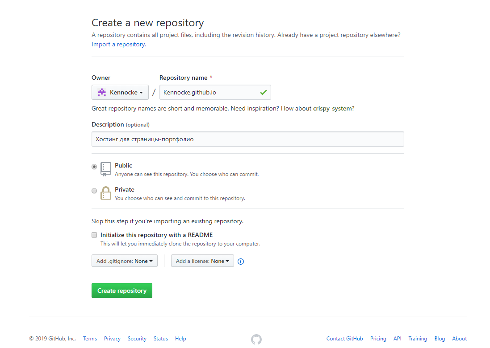

Лабораторная работа №1
Шаг 1. Создание нового репозитория
Если ваш сайт — это статические HTML-страницы, то необязательно приобретать хостинг, можно воспользоваться сервисом GitHub Pages. Для этого у вас должен быть аккаунт на Гитхабе. Как зарегистрироваться можно посмотреть в предыдущей статье.
Шаг 2. Загрузка файлов
Репозиторий создан, теперь нужно загрузить файлы. Для этого необязательно клонировать репозиторий к себе на компьютер или постигать другие нюансы работы с Гитом — можно воспользоваться интерфейсом Гитхаба. Давайте нажмём кнопку «Upload files».
Готово! Файлы загружены в репозиторий.
Шаг 3. Проверка работы сайта
Чтобы проверить работу сайта, достаточно перейти по адресу username.github.io, в нашем случае это htmlacademy.github.io. Вуаля!